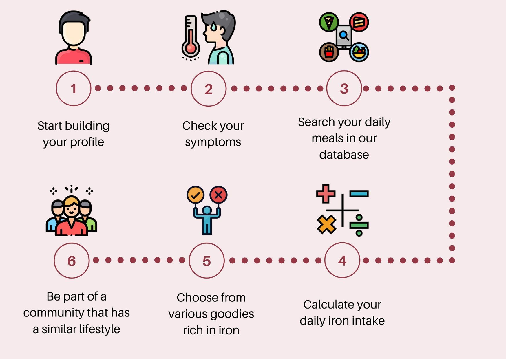

Anemia is a condition in which the body of the person suffering from this illness lacks healthy red blood cells that usually carry the oxygen needed by tissues. There are many different forms of anemia, each having its own symptoms and cause. Its time expectancy can also differ, from temporary anemia to long term one, being mild or severe.
On a global level, this disease affects 1.62 billion people, this huge number corresponding to 24.8% of the population. The larger part of the ill people is formed of preschool-age children (add source). Dr. Anemia was developed for this segment of population. Treatment for anemia can vary from taking supplements to undergoing medical procedures, but one may be able to prevent some types of anemia by having a healthy lifestyle and a diet rich in iron. This is where Dr.Anemia’s intervention may count the most.
There are many and different types of applications that focus on nutrition care, mainly by counting the calories or the proportion of fats-proteins-carbs in the user’s meal. Dr. Anemia deals with the iron intake. This platform monitors the percentage of iron in each nutrient the user eats/drinks, taking into account the segment of age, gender, eventual symptoms and general conditions (pregnancy, different illnesses or medication). Briefly, the purpose for which this platform was developed is to prevent and monitor the iron level in one’s blood, as this may be one of the most important measures that must be taken when dealing with anemia.
